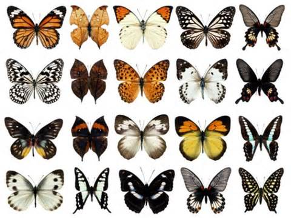
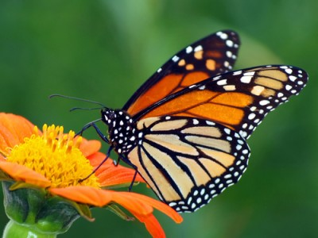
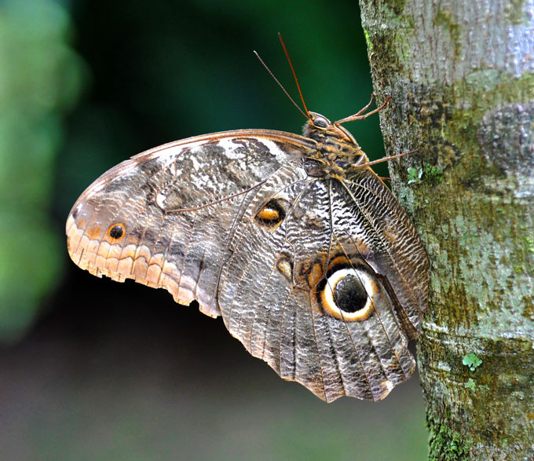
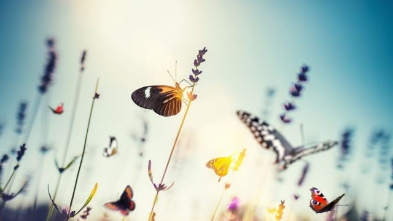

Pertencentes à Ordem Lepidoptera, as borboletas são lindos insetos artrópodes pertencentes à Classe
Insectea. Elas apresentam o corpo dividido em cabeça, tórax e abdomem com: um par de antenas, seis
patas e asas.
Elas são muito parecidas com as mariposas, porém com algumas características que as diferem, como os
habitos diurnos da borboleta se contrapondo à atividade noturna da mariposa. Além disso, as mariposas
sempre mantém as asas abertas, mesmo quando pousam, enquanto a borboleta as mantém elevadas. Outra
diferença que pode ser notada é em relação às antenas de cada uma, enquanto as pertencentes à mariposa
são semelhantes a penas, as antenas da majestosa borboleta são bem finas, com uma dilatação na ponta.
Algumas espécies de borboletas
Borboleta Almirante Vermelho;
Borboleta Apolo;
Borboleta Coruja;
Borboleta Flambeau;
Borboleta Rabo de Andorinha.
Para mais informações sobre estas espécies de borboletas acesse: Fiocruz

Fases da vida de uma borboleta
As borboletas possuem fases da vida bem definidas e características como:
Ovo, lançado aleatoriamente no solo ou depositado em lugares que possuam alimento abundante para a
futura lagarta que irá nascer;
Larva ou Lagarta, durante esta fase da vida se alimenta vorazmente de vegetais, pois necessita
armazenar substâncias nutritivas para quando permanecer em forma de crisálida;
Pupa ou crisálida, durante este período, ela se mantém pendurada de cabeça para baixo, para, tempos
depois, se transformar na borboleta adulta. Esta transformação pode durar de 10 a 15 dias;
Imago (borboleta jovem);
(borboleta própriamente dita), nesta etapa de sua vida, o inseto se alimenta basicamente de
néctar através do probóscide, ou espirotromba. Graças à sua alimentação neste período, ocorre a
polinização de diversas flores, pois ao voar de flor em flor, ela espalha o pólen, necessário para a
reprodução de diversas plantas. As flores vistosas, com odor forte e adocicado, são as mais atrativas
para elas.
As cores das borboletas
As borboletas utilizam das cores para se proteger:
Cores fortes, como tons de vermelho, laranja, preto e amarelo, alertam a um possível predador de que
ela provavelmete possui veneno ou gosto ruim.

Cores miméticas, fazem com que ela se assemelhe a outro animal, potencialmente perigoso ou
impalatável.

Coloração críptica,ou seja, que se assemelha ao ambiente, possibilitando a camuflagem da
borboleta.
Curiosidades sobre as borboletas
Elas utilizam as patas para sentir sabores;
Seus olhos são compostos por milhares de lentes, podém enxergar até 360 graus e identificar a luz
ultravioleta. Elas enxergam as cores verde, vermelho e amarelo;
As borboletas não produzem dejetos, pois utilizam tudo o que comem para a produção de energia;
O tamanho destes insetos pode variar de três milímetros a 30 centímetros;
Elas voam a velocidades entre 8km/h e 20km/h;
Existem borboletas em quase todos os continentes, menos na Antártida;
Não conseguem voar se a temperatura de seu corpo estiver abaixo de 30°C;
Borboletas monarca voam mais de três mil quilômetros entre o Canadá e o México durante o inverno,
e repetem o percurso na primavera;
Algumas borboletas se alimentam de sangue em feridas abertas de outros animais;
O coletivo de borboletas é conhecido como panapaná ou panapanã.
A importância das borboletas para manter equilíbrio do ecossistema é indiscutível. Junto com
as abelhas, são uma das espécies mais essenciais para o planeta. A preseça das borboletas indica
áreas ricas em outros invertebrados.
São importântes polinizadoras para a maioria das plantas.
Servem de alimento para diversos animais, como: pássaros, aranhas e lagartos.
A mística das borboletas
Ao longo da história, estes lindos insetos, coloridos e misteriosos passaram a representar
transformação, natureza, morte, pecado. Além, de ser fonte de inspiração para diversos artistas.
Pintores, músicos e poetas de agora e também de outras épocas já usaram as borboletas em suas obras.
Na Grécia Antiga, borboletas representavam a essência de todo ser humano. A Psique, deusa da alma,
era frequentemente representada e descrita com asas de borboleta.
Também, antigamente, borboletas com asas que possuem desenho de olhos eram vistas como fiscais
da moral alheia.
Houve épocas em que as borboletas vermelhas, de cores brilhantes e intensas, foram associadas ao
inferno, e representadas dessa maneira em algumas pinturas, como a do artista holandês Jan Van
Huysum, que pintou uma borboleta branca – símbolo de esperança – se alimentando em um vaso de
flores. No contraste, uma borboleta sombria, vermelha, diabólica.
Em outros casos, também falando em representação artística, borboletas são utilizadas para refletir
medos humanos. Em “Jardim das Delícias”, de Hieronymus Bosch, borboletas são boa parte da representação
do inferno, assombrando seres humanos.

Sobre o agente conversacional
Primeiramente, o que é um agente conversacional?
Os agentes conversacionais podem ser definidos como sistemas projetados para receber um parâmetro do usuário
e oferecer uma resposta apropriada, de forma a simular uma conversa humana (TEDESCO; BARROS, 2016).
Sendo assim, um agente conversacional é um sistema de diálogo, em que o usuário realiza perguntas para um chatbot que as
responde de acordo com seus conhecimentos. Para que este chat virtual funcione, é necessário que um programador
ensine para o robo o que ele deve responder em cada caso e o que ele irá saber. Utiliza-se a linhuagem de
marcação AIML para programá-lo.
Meu agente conversacional
Utilizando o AIML, desenvolvi um chatbot capaz de responder assuntos relácionados às borboletas, foco de fala
durante todo este site, tornando a incersão de conhecimento mais prática e dinâmica. Os assuntos que ele tem
conhecimento são:
O que são borboletas;
Borboletas;
Características diferentes das borboletas e mariposas;
Exemplos de espécies de borboletas;
Espécies de borboletas;
Fases de vida da borboleta;
Fases de vida;
Curiosidades sobre as borboletas;
Curiosidades;
Importância das borboletas;
Quantas espécies de borboletas existem no mundo;
Quem descobriu a metamorfose;
Descoberta da metamorfose;
Quem foi Maria Merian;
Maria Merian.
Inicie uma conversa com o agente conversacional, utilizando estas perguntas, no link a seguir: Clique aqui e acesse o agente